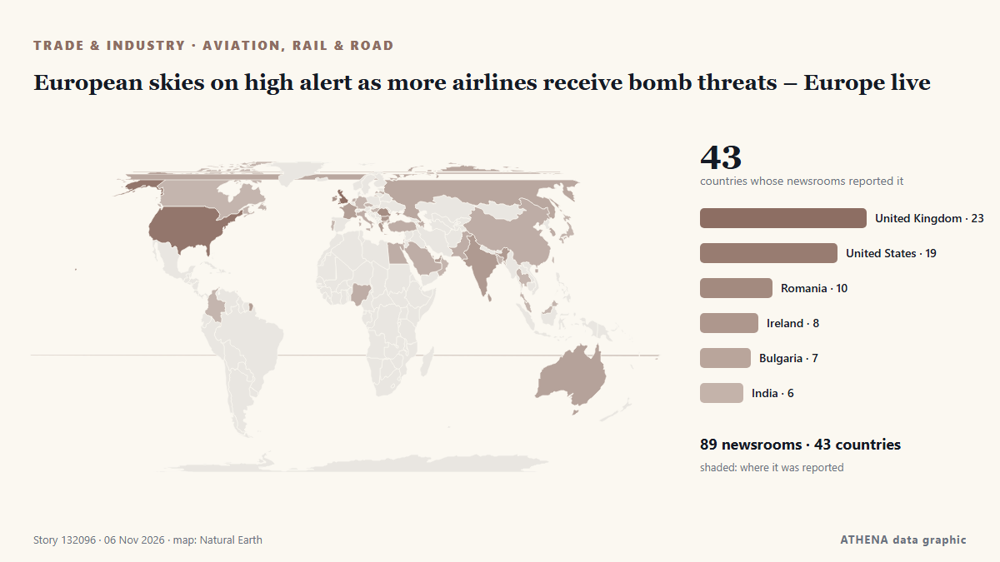

European skies on high alert as more airlines receive bomb threats – Europe live

Anonymous tip-off about explosives on Ryanair planes from Lisbon and Dublin prompted fighter jet escort; similar false alerts reported across Europe on Tuesday. από Wanted in Rome (working feed)
Αναφέρθηκε ανεξάρτητα από 91 μέσα σε 44 χώρες από τις 3 Νοε, πρώτο το Romania Insider· η κάλυψη εξαπλώνεται ακόμη. Το ATHENA εκτιμά τον κίνδυνο αυξημένο (4.2/10), κυρίως λόγω της σοβαρότητάς του και της εμβέλειάς του. Βεβαιότητα 90% (υψηλή): το επιβεβαιώνουν 91 ανεξάρτητα μέσα, μέση αξιοπιστία 72%. Μέσα ανά χώρα: Ηνωμένες Πολιτείες (8), Ρουμανία (6), Ηνωμένο Βασίλειο (5). Κάλυψη: 3 Νοε έως 4 Νοε, 33 ώρες.
Γιατί έχει σημασία: Οι διαταραχές στο εμπόριο, τη βιομηχανία ή τις υποδομές διαδίδονται στις αλυσίδες εφοδιασμού και αλλάζουν κόστη και χρόνους παράδοσης μακριά.
Τι άλλαξε: 62 νέες αναφορές από 54 μέσα στο 24ωρο έως 6 Νοε.
Πρώτη διατύπωση: Romania’s airline Dan Air loses payment operator after insolvency request
Οι τίτλοι των ειδήσεων παρουσιάζονται στα αγγλικά, όπως δημοσιεύτηκαν.
Με μια ματιά
Επιλέγεται, βαθμολογείται και γράφεται από τη δημοσιευμένη μεθοδολογία του ATHENA. Κανένας συντάκτης δεν παρεμβαίνει σε μεμονωμένα γεγονότα. Πώς παράγεται ›
| 03 Nov 13:12 UTC | 2 |
|---|---|
| 03 Nov 16:12 UTC | 1 |
| 03 Nov 19:12 UTC | 4 |
| 03 Nov 22:12 UTC | 3 |
| 04 Nov 01:12 UTC | 6 |
| 04 Nov 04:12 UTC | 4 |
| 04 Nov 07:12 UTC | 6 |
| 04 Nov 10:12 UTC | 6 |
| 04 Nov 13:12 UTC | 6 |
| 04 Nov 16:12 UTC | 0 |
| 04 Nov 19:12 UTC | 2 |
| 04 Nov 22:12 UTC | 2 |
| 05 Nov 01:12 UTC | 2 |
| 05 Nov 04:12 UTC | 1 |
| 05 Nov 07:12 UTC | 6 |
| 05 Nov 10:12 UTC | 31 |
| 05 Nov 13:12 UTC | 22 |
| 05 Nov 16:12 UTC | 14 |
| 05 Nov 19:12 UTC | 7 |
| 05 Nov 22:12 UTC | 8 |
| 06 Nov 01:12 UTC | 4 |
| 06 Nov 04:12 UTC | 0 |
| 06 Nov 07:12 UTC | 2 |
| 06 Nov 10:12 UTC | 12 |
| 06 Nov 13:12 UTC | 1 |
| 05 Nov 14:06 UTC | 3.0 |
|---|---|
| 06 Nov 00:04 UTC | 4.4 |
| 06 Nov 11:08 UTC | 3.7 |
| 06 Nov 14:07 UTC | 4.2 |
Γιατί αυτοί οι αριθμοί
Σημασία
Κίνδυνος
Βεβαιότητα
Η κάλυψη — ποιος το ανέφερε και πότε
ο τίτλος όπως δημοσιεύτηκε · ανοίγει το πρωτότυπο- Romania Insider · ΡουμανίαUS Under Secretary of Defense for Policy to meet president Dan in Bucharest on November 4
- Wanted in Rome (working feed) · ΙταλίαHoax bomb threats hit flights at Rome’s Fiumicino airport
- Business Review (Romania) · ΡουμανίαBellemonde opens the first Ready to Move In showroom in northern Bucharest
- Simple Flying · Ηνωμένες ΠολιτείεςAir Canada Cancels All Flights To This Long-Haul Destination: See Map Now
- Evening Standard (London) · Ηνωμένο ΒασίλειοTwo Ryanair flights from Dublin searched after potential bomb threats
- Belfast Telegraph · Ηνωμένο ΒασίλειοTwo Ryanair flights from Dublin searched after potential bomb threats
- PBS NewsHour · Ηνωμένες ΠολιτείεςFlights across Europe face disruption after false bomb threats
- FBC News · ΦίτζιBomb threats on flights, cruise ship cause disruption in Europe, no devices found
- Al Jazeera English · ΚατάρBomb threats disrupt flights across Europe, no explosive devices found
- Punch · ΝιγηρίαSenate debates national carrier, demands equal China flight rights
- The Island · Σρι ΛάνκαSeven flights across Europe targeted by suspected bomb threats
- Business Recorder · ΠακιστάνBomb threats disrupt Europe flights
- Al Jazeera English · ΚατάρSeven flights across Europe targeted by suspected bomb threats
- Nikkei Asia · ΙαπωνίαTaiwan airlines continue flights over Russia, rattling Europeans
- Trinidad Express · Τρινιντάντ και ΤομπάγκοBid to ease airport anxiety
- The National Herald · Ηνωμένες ΠολιτείεςFlights across Europe Searched and Diverted after Hoax Bomb Threats
- ABC News Australia · ΑυστραλίαChina Southern Airlines suspends direct Darwin to China route after one year
- Daily Mirror · Σρι ΛάνκαSeven flights across Europe targeted by suspected bomb threats
- Gulf News · Ηνωμένα Αραβικά ΕμιράταEmirates Dubai-US flights: New mandatory attestation form from November 4
- WalesOnline · Ηνωμένο ΒασίλειοGovernment update on Ryanair bomb threat that grounded seven flights
- Daily Mirror · Σρι ΛάνκαThree Indian passengers arrested over unruly behaviour on Sydney-Katunayake flight
- Romania Insider · ΡουμανίαRomania’s airline Dan Air loses payment operator after insolvency request
- Birmingham Mail · Ηνωμένο ΒασίλειοBirmingham Airport to Delhi flight axed in 'real loss' for Indian community
- Arab Times · ΚουβέιτFlights across Europe searched and diverted after hoax bomb threats
- Baltic News Network · ΛετονίαBomb threats disrupt flights across Europe
- Business Traveller · Ηνωμένο ΒασίλειοSWISS Bengaluru Flights Take Off With Nonstop Zurich Link
- Business Review (Romania) · ΡουμανίαRomania’s purchasing power is barely half the European average, while Bucharest exceeds it
- Arabian Business · Ηνωμένα Αραβικά ΕμιράταEmirates imposes new US flight forms effective immediately
- BTA (English) · ΒουλγαρίαBTA Bucharest Correspondent Martina Gancheva Receives Romanian Association of Journalists and Tourism Writers Award of Excellence
- Romania Insider · ΡουμανίαRomania slips one place in European purchasing power ranking, Bucharest scores twice the national average
- Egypt Independent · ΑίγυπτοςBomb threats on board 7 flights across Europe cause disruptions
- The War Zone · Ηνωμένες ΠολιτείεςUSAF Widens Lower-Cost Cruise Missile Effort To Also Include Glide Bombs
- NDTV · ΙνδίαForeign Airlines Back Moving Some Mumbai Flights To Navi Mumbai Airport
- Business Review (Romania) · ΡουμανίαPrimark confirms November opening dates for new stores in Bacău and Bucharest
- FreightWaves · Ηνωμένες ΠολιτείεςEast Midlands Airport welcomes another Chinese cargo airline
- Breaking Defense · Ηνωμένες ΠολιτείεςUK airshow RIAT permanently relocates from Fairford
- Indian Express · ΙνδίαMumbai airport wants all flights to 14 overseas destinations to move to Navi Mumbai, writes to government
- FreightWaves · Ηνωμένες ΠολιτείεςEmirates rolls out enhanced air cargo service for data center operators
- Simple Flying · Ηνωμένες ΠολιτείεςHow Much Premium Economy Costs On London-New York Flights In 2026
- Greek City Times · ΕλλάδαGreece Sees Stronger Travel Demand and More Flights